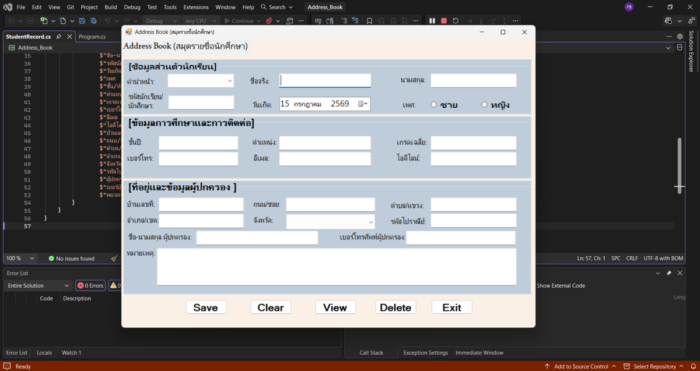
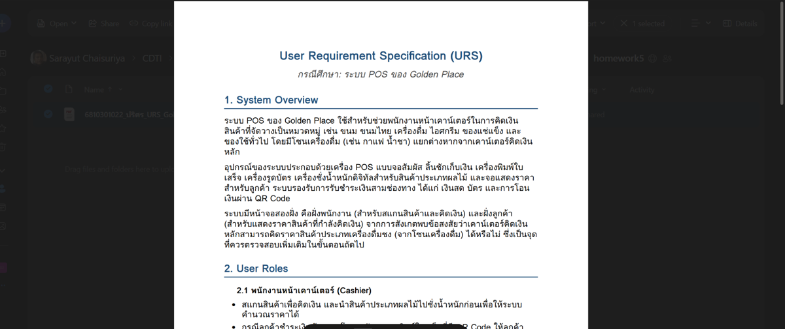
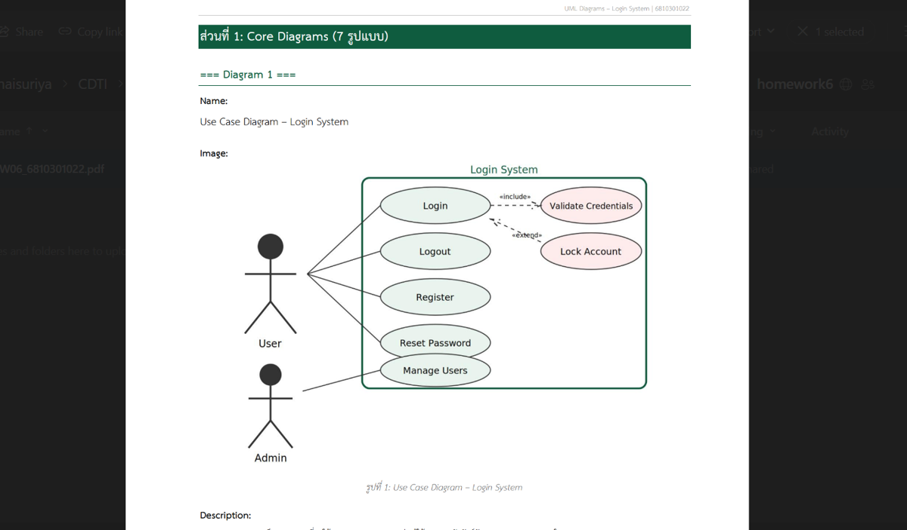

ผลงานการบ้าน
รวมการบ้านทั้งหมดของรายวิชานี้ แต่ละรายการมีปุ่ม "ดู (View)" สำหรับเปิดหน้ารายละเอียด และปุ่ม "ดาวน์โหลด" สำหรับดาวน์โหลดไฟล์งาน — เพิ่มการบ้านใหม่ในอนาคตได้ง่าย เพียงคัดลอกโครงการ์ดแล้วแก้ข้อมูล




